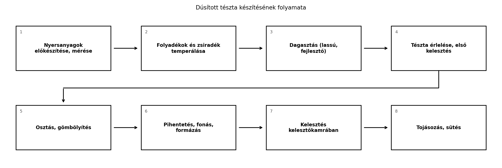

Szombat hajnalban a pékség ünnepi rendelésre fonott kalácsot készít. A tejes tésztához képest most a dagasztóba bőségesen kerül vaj, cukor, tojás és tej is. A tészta lágyabb, sűrűbb, lassabban kel, a fonat a kelesztőben könnyen szétcsúszik, a cukros-tojásos felület pedig hamar barna lesz a kemencében. A péknek ezért egyszerre kell igazítania az élesztő adagját, a dagasztási időt, a kelesztő páratartalmát és a sütési hőmérsékletet. Ha bármelyik paraméter rossz, a termék nem lesz puha, fényes és szabályos fonat.
A dúsított tészta tehát nem egyszerűen „több anyagot” jelent; a cukor, zsiradék, tojás és tej együttes hatása miatt a technológia jelentősen eltér a vizes és tejes tésztákétól.
A dúsított tészta készítésének lépései egy folyamatos munkaláncot alkotnak. Az alábbi ábra azt mutatja, hogy a tésztakészítéstől a sütésig milyen sorrendben haladunk, és hol kell különösen figyelni a paraméterekre.

A folyamatábrán jól látszik, hogy a dúsított tésztánál a folyadékok és a zsiradék temperálása külön lépés, mert a hideg tojás és a hideg vaj lassítaná az élesztőt, a túl meleg víz pedig idő előtt felgyorsítaná az erjedést.
Definíció. Dúsított tészta: olyan lágy péksüteménytészta, amelyben a lisztre vetített zsiradék kb. 6–15%, a cukor kb. 8–20%, a tojás 5–15%, és a folyadék jelentős része tej vagy tejporral készült tejoldat. A dúsított tészta a tejes tésztánál gazdagabb, de még nem olyan nagy zsiradék- és tojástartalmú, mint a briós vagy a foszlós kalács tésztája. A pontos összetételi határokat az üzemi technológiai lap és a Magyar Élelmiszerkönyv sütőipari termékekre vonatkozó előírásai adják (ellenőrizendő: hatályos Élelmiszerkönyv-előírás).
A dúsítás a tésztát több ponton alakítja. A zsiradék a gluténszálak bevonásával puhább, finomabb bélzetet és lassabb öregedést ad. A cukor táplálja az élesztőt, ugyanakkor nagyobb mennyiségben vízelvonó hatású, ezért lassítja az erjedést. A tojás sárgája emulgeál, színt és dús ízt ad, a fehérje pedig a bélzet rugalmasságát és a héj színét javítja. A tejfehérje és tejzsír tovább puhít, a laktóz pedig a sütés során barnább, ízesebb héjat eredményez.
Továbbvitt eredmény. Az itt megismert dúsított tészta, a dúsításhoz illeszkedő élesztőadagolás és a fonás-tojásozás fogásai közvetlenül felhasználhatók a Péksütemények feldolgozása, kelesztése és sütése a gyakorlatban és a Tojással dúsított tészta: briós és foszlós kalács alfejezetekben.
A dúsított tésztát általában közvetlen eljárással készítjük, de nagyobb üzemi tételnél előtésztát vagy kovászt is használhatunk. A legfontosabb szabály, hogy a dúsítás mértékéhez igazítva kell megnövelni az élesztő mennyiségét, mert a cukor és a zsiradék lassítja az erjedést.
Szabály. Dúsított tésztánál a friss sütőélesztő adagja lisztre vetítve általában 4–6%. Például 10 kg liszthez 0,4–0,6 kg friss élesztőt mérünk. Ha a receptúra sok cukrot (10% fölött) és sok zsiradékot (15% fölött) tartalmaz, az élesztőt a tartomány felső feléhez érdemes választani. Az érték tanulási példa; a pontos adagot a technológiai lap határozza meg (ellenőrizendő: üzemi technológiai lap, élesztőgyártói adatlap).
Szabály. Dúsított tésztánál a dagasztás lassú, majd fejlesztő szakaszból áll. Először a lisztet, a folyadékot, az élesztőt és a cukrot keverjük össze, hogy a gluténszálak megduzzadjanak. A zsiradékot csak a dagasztás első harmada után adagoljuk, különben a vaj vagy margarin túl korán bevonja a glutént, és a tészta nem fejlődik ki. A tojást az élesztős folyadékkal együtt (a hőmérséklet-illesztés után) adjuk be, a sót a tészta összeállása után, hogy az élesztő ne érintkezzen közvetlenül a sóval.
Szabály. A kész dúsított tészta hőmérséklete 26–28 °C legyen. A folyadék hőmérsékletét úgy kell beállítani, hogy a hideg tojás, tej és a dagasztógép súrlódási melegedése után ezt a célhőmérsékletet elérje. A részletes számítást a Tésztahőmérséklet és dagasztóvíz számítása alfejezet tanítja; itt a dúsított anyagok miatt a tojás és a tej hideg hőmérsékletét is figyelembe kell venni.
Allergén. A dúsított tésztában a leggyakoribb allergén összetevők: búzaliszt (glutén), tej (tejfehérje), tojás, valamint ha a margarin szóját vagy tejfehérjét tartalmaz, a szója és a tej is. A késztermék jelölésénél az 1169/2011/EU rendelet szerint mindegyik allergént ki kell emelni (ellenőrizendő: aktuális jogszabály szövege). A gluténmentes vagy tej- és tojásmentes termékeket külön gyártósoron vagy szigorúan elkülönítve készítjük, mert a lisztpor és a tojásozó szerszám keresztszennyezést okozhat.
Az alábbi példák a dúsított tészta receptúrájának kiszámítását és a kelesztési-sütési paraméterekhez szükséges mennyiségeket mutatják.
Adott: liszt , lisztre vetített százalékok: friss élesztő 5%, cukor 8%, vaj 12%, tojáslé 10%, tej 15%, víz 25%, só 1,5%.
Keresett: az egyes anyagok tömege, a tészta össztömege, a tésztahozam és a víztartalom alapján becsült tésztakitermelés .
Számítás. Lisztre vetített százaléknál minden anyag tömegét a képlettel kapjuk.
| Nyersanyag | Lisztre vetített % | Mennyiség (kg) |
|---|---|---|
| BL 55 liszt | 100 | 10,00 |
| Friss élesztő | 5 | 0,50 |
| Cukor | 8 | 0,80 |
| Vaj (vagy sütőmargarin) | 12 | 1,20 |
| Tojáslé | 10 | 1,00 |
| Tej | 15 | 1,50 |
| Víz | 25 | 2,50 |
| Só | 1,5 | 0,15 |
| Tészta összesen | – | 17,65 |
Ellenőrzés: , tehát az összeg helyes.
A tésztahozam:
A TA-t a folyadékok víztartalmával közelítjük, következetesen: a víz 2,5 kg, a tej kb. 87%-a víz (1,5 kg ≈ 1,3 kg), a tojáslé kb. 75–80%-a víz (1,0 kg ≈ 0,8 kg):
A tésztahozam (176,5) és a TA (kb. 146) nem azonos; az A péksütemények jellemzése, csoportnormái és vezértermékei táblázatának 170–185 értéke a tésztahozam.
A gyakorlatban a TA-t az üzemi technológiai lap szerint, az összes folyadék nedvességtartalmával pontosítják (ellenőrizendő: üzemi technológiai lap).
Adott: liszt 12,0 kg, a dúsítás miatt 5,5% friss élesztőt ír elő a technológiai lap. A raktárban csak szárított élesztő van; a gyártói útmutató szerint a friss élesztő 1/3-a szárított élesztővel helyettesíthető.
Keresett: friss élesztő tömege, szárított élesztő tömege és a pótlandó víz tömege.
Számítás. Friss élesztő:
Szárított élesztő:
A friss és szárított tömeg különbségét vízzel pótoljuk, hogy a tészta nedvességtartalma ne változzon:
Megjegyzés. A szárított élesztőt a gyártó utasítása szerint először langyos vízben vagy cukros tejben kell feloldani, és sosem szabad 45 °C fölé melegíteni (ellenőrizendő: gyártói adatlap).
Adott: kész fonott kalács kívánt tömege 500 g, sütési veszteség 12%, hűlési veszteség 2%.
Keresett: feladási tömeg.
Számítás. Az összes veszteség:
A feladási tömeg:
Ha 30 darab kész kalácsot sütünk, a feladásra szükséges tészta: . A 17,65 kg tésztából 0,19 kg (190 g) marad, ez a dagasztási és osztási veszteség tartaléka.
Adott: a dúsított tészta célhőmérséklete 26 °C. A liszt hőmérséklete 20 °C, a dagasztógép várható súrlódási melegedése 2 °C. A folyadékot (2,5 kg víz, 1,5 kg tej, 1,0 kg tojáslé) úgy kell beállítani, hogy a kész tészta 26 °C legyen. A tojás és a tej hidegkamrából érkezik, hőmérsékletük 8 °C.
Keresett: a szükséges folyadék-hőmérséklet és a hozzáadandó víz hőmérséklete.
Számítás. A dagasztóvíz-számítás egyszerűsített képlete szerint:
A dagasztógép melegít, ezért a súrlódási hőt le kell vonni. A folyadékok súlyozott átlagának 30 °C-ra kell kerülnie (a 2-es szorzó kb. 1 : 0,6 liszt–víz arányra kalibrált; itt 10 kg liszthez 5 kg folyadék tartozik, ezért a becslés közelítő). A hideg tej és tojás hőmérsékletét ismerve a víz hőmérsékletére:
Figyelem. Az 52 °C-os víz az élesztőt közvetlenül károsítaná, ezért a meleg vizet először a hideg tejjel és tojással kell összekeverni, hogy a keverék 30 °C legyen, és csak utána szabad az élesztőt hozzáadni. A gyakorlatban mindig kézzel vagy hőmérővel ellenőrizzük a folyadék hőmérsékletét. A fenti képlet tanulási modell; a pontos értéket a technológiai lap és a dagasztógép gépkönyve adja (ellenőrizendő: üzemi technológiai lap, gépkönyv).
Egy kis pékségben a tanuló egyszer túl meleg, körülbelül 50 °C-os vízzel keverte be a dúsított tésztát, mert a súrlódási hőt hozzáadta ahelyett, hogy levonta volna. A tészta 32 °C-ra melegedett, az élesztő túlzottan felgyorsult, a kelesztőben a fonat szétesett, a héj pedig már a sütés elején túlzottan megbarnult. A pék leállította a tételt, és a tésztából kisméretű csigákat formázott, amelyek rövidebb kelesztéssel még elfogadható termékké váltak. A tanulság: a dúsított tésztánál a folyadék hőmérséklet-illesztését mindig a hideg összetevők (tojás, tej, hideg vaj) figyelembevételével kell elvégezni, és az első dagasztás után meg kell mérni a tészta hőmérsékletét.
Cél: Egységes, szabályos, fényes héjú, puha bélzetű fonott kalács készítése dúsított tésztából, technológiai lap szerint.
Eszközök és anyagok: dagasztógép, mérleg, kelesztőkocsi, szakajtólemez, sütőlemez, sütőlemez vagy kalácsforma, tojásozó ecset, szűrő, hőmérő, páratartalom-mérő; a technológiai lap szerinti nyersanyagok (liszt, élesztő, tej, víz, cukor, vaj vagy margarin, tojás, só).
Higiénia. A munka megkezdése előtt tiszta munkaruhát és hajhálót veszünk fel, kezet mosunk, az ékszereket levesszük, a sebeket ellátjuk. A munkafelületet, a dagasztócsészét, a formázóeszközöket és a tojásozó ecsetet tisztán, fertőtlenített állapotban használjuk. A nyers tojást csak a hűtőből való kivétel után, közvetlenül a dagasztás előtt mérjük ki. A tojásfehérjét és tojáslevet nem hagyhatjuk hosszan melegen állni. A kelesztőkamra és a sütőlemez tisztaságát ellenőrizzük.
Gépbiztonság. A dagasztógépet csak betanítás után, felügyelettel használjuk. Üzem előtt meggyőződünk arról, hogy a védőburkolat zárva van, a reteszelés működik, és a vészleállító elérhető. A dagasztócsésze leállítása és a forgó karok teljes megállása előtt a gépbe nyúlni tilos. A tisztítást csak leállított, áramtalanított gépen végezzük, az újraindítás elleni biztosítás mellett. A forró sütőlemezt csak védőkesztyűvel fogadjuk.
Lépések:
Nyersanyagok előkészítése: mérjük ki a lisztet, az élesztőt, a sót, a cukrot, a zsiradékot, a tojáslevet, a tejet és a vizet. A vajat vagy margarint szobahőmérsékletűre temperáljuk, hogy keverhető legyen, de ne olvadjon meg.
Folyadékhőmérséklet beállítása: a hideg tojást és tejet a számított hőmérsékletű vízzel keverjük össze, hogy a folyadék kb. 30 °C legyen (tanulási példa). Ellenőrizzük hőmérővel, majd az élesztőt a folyadék egy részében feloldjuk.
Dagasztás: a lisztet, a cukrot és az élesztős folyadékot (a tojással együtt) lassú fokozaton keverjük. A sót a tészta összeállása után, a zsiradékot a dagasztás első harmada után fokozatosan adjuk hozzá. A dagasztást fejlesztő fokozaton addig folytatjuk, amíg a tészta sima, rugalmas és a csészétől elválik. A célhőmérséklet 26–28 °C.
Első kelesztés: a tésztát letakarva 30–45 percig pihentetjük, amíg láthatóan meg nem nő, de nem duzzad túl.
Osztás, gömbölyítés, pihentetés: a tésztát a kívánt fonathosszhoz mérjük, gombócokra gömbölyítjük, majd 10–15 percig takarva pihentetjük, hogy a glutén relaxálódjon.
Fonás: a gombócokat egyenletes hosszúságú szálakká sodrjuk. A szálakat mindig a helyük szerint, balról jobbra számozzuk; minden mozdulat után a számozás újraindul. Háromszálas fonatnál a szélső szálat a középső fölé emeljük, felváltva jobbról és balról (a jobb szélső a középső fölé, majd a bal szélső a középső fölé). Négyszálas fonatnál egy gyakori sorrend: a 4. helyen lévő szál a 2. fölé, az 1. helyen lévő a 3. fölé, majd a 2. helyen lévő a 3. fölé, és ezt ismételjük (ellenőrizendő: üzemi technológiai lap, szakkönyv). Az 5–6 szálas fonás sorrendjét az üzemi technológiai lap adja meg; az elv ugyanaz: a szélső szálat meghatározott számú szál fölött, illetve alatt vezetjük át. A fonat végeit aláhajtjuk és enyhén megnyomjuk, hogy sütés közben ne nyíljon szét.
Kelesztés: a fonatot sütőlemezre helyezzük, és kelesztőkamrába tesszük. A jellemző kelesztési paraméter: 32–36 °C, 75–80% relatív páratartalom, 45–70 perc, a tészta méretétől és a dúsítás mértékétől függően (ellenőrizendő: üzemi technológiai lap). A kelesztés akkor jó, ha a fonat láthatóan megnőtt, ujjbeggyel óvatosan benyomva a mélyedés lassan visszarugózik.
Tojásozás: a megkelt fonatot óvatosan lekenjük felvert, átszűrt tojással. A tojást vékony, egyenletes rétegben visszük fel, hogy a mélyedésekben ne gyűljön össze. A tojásozás után a felületet magvakkal (pl. mák, szezám) is megszórhatjuk; ha szezámot szórunk, azt allergénként jelölni kell.
Sütés: a kalácsot 180–200 °C-os kemencébe vetjük, kevés vagy semmi gőz alkalmazása mellett, mert a tojásozott felület fényes, és a gőz elmosná a mintát. A sütési idő 500 g-os fonatnál 25–35 perc, a sütőtípustól függően (ellenőrizendő: kemence típusa, üzemi technológiai lap). A kész kalács maghőmérséklete a technológiai lap szerinti határ, tanulási példaként legalább 92 °C (dúsított termék, a referenciatábla 90–96 °C-os sávja); minden tételnél mérni és dokumentálni kell (ellenőrizendő: üzemi HACCP-terv).
Hűtés és ellenőrzés: a megsült kalácsot rácsra tesszük, és teljesen kihűtjük, mielőtt csomagoljuk vagy szállításra rakjuk.
A 6. lépés két fonási módját az alábbi ábra mutatja felülnézetben. A felső sorban a háromszálas fonás: a felül összenyomott szálakból (A0) előbb a jobb szélső szál kerül a középső fölé (A1), majd a bal szélső (A2), és ezt felváltva ismételjük, végül a végeket aláhajtjuk (A3). Az alsó sorban a négyszálas fonás: „4 a 2 fölé” (B1), „1 a 3 fölé” (B2), „2 a 3 fölé” (B3), majd ismétlés (B4). A számok a szálak pillanatnyi helyét jelölik, nem a szálakat: ezért a szálak kitöltése eltérő, hogy követni lehessen, melyik hova kerül.
A fonatot lazán, egyenletes húzással fonjuk: a túl szoros fonat kelesztés közben szétnyílhat (lásd Tipikus hibák). A HTML-kiadásban a lépések egyenként lejátszhatók, mindegyikhez a mozdulat szövegével.
Termék: Dúsított fonott kalács, 3 szálas fonat, késztermék tömege 500 g/db, tétel 30 db.
| Nyersanyag | Lisztre vetített % | Mennyiség (kg) | Megjegyzés |
|---|---|---|---|
| BL 55 liszt | 100 | 10,00 | 20–22 °C |
| Friss sütőélesztő | 5,0 | 0,50 | 0,5 kg, langyos vízben feloldva |
| Cukor | 8,0 | 0,80 | kristálycukor |
| Vaj vagy sütőmargarin | 12,0 | 1,20 | szobahőmérsékletűre temperálva |
| Tojáslé | 10,0 | 1,00 | 8 °C-ról, a folyadékba keverve |
| Tej | 15,0 | 1,50 | 8 °C-ról |
| Víz | 25,0 | 2,50 | lásd: hőmérséklet-illesztés |
| Só | 1,5 | 0,15 | finom konyhasó |
| Tészta összesen | – | 17,65 | – |
Műveleti paraméterek: - TA ≈ 146 (víztartalom alapján, tanulási példa); tésztahozam: 176,5 kg/100 kg liszt. - Dagasztás: lassú fokozat 3–4 perc, fejlesztő fokozat 8–10 perc, a tészta hőmérséklete 26–28 °C. - Első kelesztés: 30–45 perc, letakarva. - Feladási tömeg: 582 g/db, 30 db esetén összesen 17,46 kg. - Fonás: 3 szálas, egyenletes 55–60 cm hosszú szálak. - Kelesztés: 32–36 °C, 75–80% RH, 45–70 perc. - Sütés: 180–200 °C, kevés gőz vagy gőz nélkül, 25–35 perc; maghőmérséklet legalább 92 °C (tanulási példa, ellenőrizendő: HACCP-terv). - Hűtés: szobahőmérsékleten, rácsra téve, legalább 30–45 perc.
Allergén. A termék a következő allergéneket tartalmazza: búzaliszt (glutén), tojás, tej; margarin használata esetén esetleg szója. A jelölésben mindegyiket ki kell emelni. Ha a felületre szezámot szórunk, az is allergén jelölési kötelezettséggel jár; a mák nem a 14 allergéncsoport tagja, de az üzemi allergénkezelési terv érzékenyítő anyagként kezelheti (ellenőrizendő: allergénkezelési terv). A gluténmentes, tej- vagy tojásmentes termékkel azonos gyártótérben való elkészítés keresztszennyeződést okozhat; ilyen kérést csak külön, igazoltan elkülönített gyártásban szabad teljesíteni (ellenőrizendő: üzemi HACCP-terv).
HACCP- és minőségi pontok. - Nyersanyag-átvétel: a tojás, tej, vaj hűtési hőmérséklete; sérült tojás nem használható (ellenőrizendő: HACCP-terv határértéke). - Kelesztési hőmérséklet és idő: a túl magas hőmérséklet vagy túl hosszú idő a tészta túlerjedését és a fonat szétesését okozza. - Sütési hőmérséklet, maghőmérséklet: a tojásos tészta átsülése élelmiszer-biztonsági szempontból is lényeges; a maghőmérséklet elérése a megfelelő átsültség jele. - Tojásozó ecset és edény: minden használat után tisztítani, fertőtleníteni kell, különben a tojás a kelesztőben hosszabb ideig hagyva mikrobiológiai kockázatot jelent.
A paraméterek és a receptúra tanulási példák. A tényleges értékeket az üzemi technológiai lap, a lisztvizsgálati eredmények és a gyártói adatlapok határozzák meg (ellenőrizendő: üzemi technológiai lap).
A dúsított fonott kalács akkor megfelelő, ha:
A fonat szabályosságát a gyakorlati útmutató lépéssora utáni, a fonás lépéseit bemutató ábrával összevetve ellenőrizzük: a szálak egyenletes vastagságúak, a kereszteződések egyenlő távolságra vannak.
| Tünet | Lehetséges ok | Megelőzés / javítás |
|---|---|---|
| A fonat szétnyílik a kelesztés vagy sütés során | Túl lágy tészta, túl rövid pihentetés, túl szoros fonás, túl hosszú kelesztés | Pontos folyadékolás, elegendő pihentetés a fonás előtt, mérsékelt kelesztés, a végek aláhajtása |
| A héj túl sötét, a bél nyers marad | Túl magas sütési hőmérséklet, túl sok cukor/tojás a felületen, nem megfelelő sütési idő | Alacsonyabb kemencehőmérséklet, hosszabb sütési idő, a maghőmérséklet ellenőrzése |
| A bélzet tömör, kevésbé lyukacsos | Kevés élesztő, túl erős sózás, alacsony kelesztési hőmérséklet, nem megfelelő dagasztás | Az élesztőadagolás emelése, a dagasztás fejlesztése, a kelesztési paraméterek betartása |
| A tészta ragad, nehezen fonható | Túl magas TA, túl meleg tészta, kevés pihentetés | Liszttel való óvatos korrigálás, hidegebb folyadék, hosszabb pihentetés |
| Nem fényes a héj, a tojásozás foltos | Tojás nem volt átszűrve, túl vastag rétegben lett felkenve, sütés előtt megszáradt | A tojást szűrni kell, vékonyan, egyenletesen kell felvinni, és a sütést hamarosan meg kell kezdeni |
1. feladat (A). Definiáld a dúsított tésztát, és sorold fel, milyen technológiai hatása van a cukornak, a zsiradéknak és a tojásnak.
2. feladat (A). Számítsd ki egy 8 kg lisztből készülő dúsított tészta anyagmennyiségeit, ha a lisztre vetített százalékok: élesztő 5%, cukor 10%, vaj 12%, tojáslé 8%, tej 15%, víz 27%, só 1,5%.
3. feladat (B). Egy dúsított kalács receptúrájában friss élesztő 6% szerepel. A tétel lisztje 15 kg. Hány kg friss élesztőt mérjünk? Mennyi szárított élesztőt és pótló vizet használjunk, ha a szárított élesztő a friss élesztő 1/3-a?
4. feladat (B). A technológiai lap szerint a fonott kalács kelesztése 32–36 °C-on, 75–80% relatív páratartalom mellett történik. Magyarázd el, miért fontos a páratartalom a dúsított tészta esetében.
5. feladat (C). Egy pék azt tapasztalja, hogy a fonott kalácsok egy része sütés közben szétnyílik a fonatnál, a bélzet viszont jó. Milyen lehetséges okokat vizsgálj meg a tészta készítésétől a kelesztésig? Melyik pontot ellenőriznéd először a HACCP naplóban?
6. feladat (D). Egy kis pékség 20 db 500 g-os dúsított fonott kalácsot készít a technológiai lap szerint. A feladási tömeg 582 g/db, a tészta összesen 11,64 kg. A dagasztás előtt a pék leméri a lisztet, és csak 6 kg-ot talál. Hány darabot tud sütni, ha a receptúrát arányosan csökkentik, és hány kg tésztát kell feladnia?
1. feladat (A). A dúsított tészta olyan lágy péksüteménytészta, amelyben a lisztre vetített zsiradék kb. 6–15%, a cukor kb. 8–20%, a tojás 5–15%, és a folyadék jelentős része tej vagy tejoldat. A cukor táplálja az élesztőt, de nagy mennyiségben lassítja az erjedést; a zsiradék puhítja a bélt, rétegezi a glutént és késlelteti az öregedést; a tojás emulgeál, színt, ízt ad, a fehérje a bélzet rugalmasságát javítja, a sárgája a héj színét.
2. feladat (A). A számítás: - élesztő: - cukor: - vaj: - tojáslé: - tej: - víz: - só: - liszt: 8,00 kg Összesen: .
3. feladat (B). Friss élesztő: . Szárított élesztő: . Pótló víz: . A szárított élesztőt a gyártó előírása szerint kell feloldani.
4. feladat (B). A dúsított tészta felülete a tojásozás előtt hajlamos a bőrösödésre, mert a cukor és a fehérje a meleg kelesztőben kiszáradhat. A 75–80% relatív páratartalom megakadályozza, hogy a tészta bőrösödjön, ugyanakkor a túl magas pára lecsapódhat, és a fonat ragacsossá válhat. A páratartalom ellenőrzése a kelesztőkamra működésének és a HACCP-terv betartásának része.
5. feladat (C). Vizsgálandó okok: túl lágy tészta (magas TA vagy folyadékolási hiba), túl rövid pihentetés a fonás előtt, túl szoros fonás, túl hosszú vagy túl meleg kelesztés, a fonat végeinek rossz aláhajtása. A HACCP naplóban először a kelesztési hőmérsékletet és időt ellenőrizném, mert a túlkelesztés a leggyakoribb oka a szétnyílásnak.
6. feladat (D). 6 kg liszt esetén a tésztamennyiség . A darabszám: , tehát 18 db süthető. A feladandó tészta: . A 20 db-hoz tészta, azaz liszt kellene, a 6 kg tehát kevés.
A dúsított tészta olyan lágy péksüteménytészta, amelyben a lisztre vetített zsiradék kb. 6–15%, a cukor kb. 8–20%, a tojás 5–15%, és a folyadék jelentős része tej (tanulási példa, az A péksütemények jellemzése, csoportnormái és vezértermékei táblázatával egyezően). A dúsítás miatt az élesztő adagja lisztre vetítve 4–6% friss élesztő, mert a cukor és a zsiradék lassítja az erjedést. A dagasztásnál a zsiradékot csak a glutén kialakulása után adjuk hozzá, a tészta célhőmérséklete 26–28 °C. A folyadék hőmérsékletét úgy kell illeszteni, hogy a hideg tojás és tej ne hűtse le a tésztát. A fonott kalácsot 32–36 °C-on, 75–80% páratartalom mellett kelesztjük, majd felvert tojással vékonyan lekenjük, és 180–200 °C-on sütjük. A tojás, tej, glutén és esetleges magok allergének, ezért a jelölést és a keresztszennyeződést ellenőrizni kell. A késztermék akkor jó, ha a fonat szabályos, a héj fényes, a bél puha, a maghőmérséklet megfelelő. Továbbvitt eredmények: a dúsított tészta készítését, a receptúra- és élesztőszámítást, valamint a fonás-tojásozás gyakorlatát felhasználjuk a Péksütemények feldolgozása, kelesztése és sütése a gyakorlatban és a Tojással dúsított tészta: briós és foszlós kalács alfejezetekben.